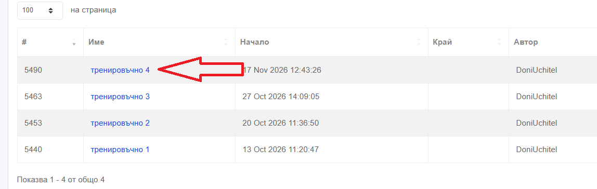

C++ · Школа по информатика · 5. клас · Седмица 9
Решаваме тренировъчно 4 в pesho.org.

В случай, че се опитате дълго време да решите някоя от задачите и все пак не успеете може да погледнете част от следните подсказки. Не четете всички наведнъж, ами след всяка се опитайте само с нея да решите задачата до край.
Тази задача е лесна, не ви трябват подсказки по нея :)
Ако все пак ви трябва истинска подсказка - помислите какво още трябва да изведете за да изглежда "добре", когато отговорът е малка стойност.
Ако съставим редица, в която участва поне едно дете от тип ББ или ЧЧ, има ли смисъл да не участват всички от съответния тип?
Кога е възможно да съставим редица, в която участват деца от тип ББ и ЧЧ? Какво трябва да седи между тях?
Можем да поставим всички ББ отляво и всички ЧЧ отдясно (като между тях поставим поне едно дете от тип БЧ) или наобратно - ЧЧ отляво, ББ отдясно с дете ЧБ между тях.
Ако можем да поставим и ББ децата, и ЧЧ децата - колко най-много деца може да поставим между тях? Помислете как ще се редуват децата в средната част на редицата.
Ако използваме всички ББ и ЧЧ деца, като посредата сложим възможно най-много редуващи се БЧ и ЧБ деца, има ли как да остане още някое свободно, което да поставим в началото или в края на редицата?
Преобразвуайте стойностите в най-удбоната мерна единица, извършете сметките в нея, и след това преобразувайте наобратно при извеждане.
Намерете времето, в което е готов всеки от тримата, след което вземете максималното от трите и го преобразувайте във формата за извеждане.
Кога трябва да изведем "full"?
Представете си че редовете и колоните са номерирани от 0 - редовете да са от 0 до 20, вместо от 1 до 21, а колоните от 0 до 5, вместо от А до F.
Представете си за момент, че няма "липсващи" места и няма резервирано място. Как да намерим реда и колоната на някое място, ако знаем кое поред е? Как да намерим кое поред е дадено място, знаейки реда и колоната му?
Как можем хитро да съобразим че първите 3 седалки (1A, 1B, 1C) липсват? Не може ли просто да се преструваме, че ги има, но са закупени? Как лесно да го симулираме, променяйки N?
Как да разберем дали резервираното място е сред първите N и ако да какво да направим с N, така че да го отразим?
Как да съобразим дали липсващите седалки на последния ред влияят или не на отговора? Ако да - как го променят?
Погледенте картинката - как да разберем колко часа би било, ако на мястото на стрелката на минутите беше стрелката на часовете?
А как да разберем колко минути биха били минали от началото на часа?
Когато разберете колко часа и колко минути би било ако преместите стрелките - за да намерите разликата, която се иска - преобразвуайте стойностите в най-удбоната мерна единица, извършете сметките в нея, и след това преобразувайте наобратно при извеждане.
Ако изобщо е възможно да поставим някоя чаша в друга, какво би било изпълнено за техните външни диаметри?
Наредете трите чаши по големина на външните им диаметри и проверете дали е възможно да поставите някоя от по-малките в някоя от по-големите.
Разгледайте всички възможни случаи - поставяне на всички една в друга, на малките 2 една до друга, вътре в най-голямата, и случаите в които е възможно да поберете само една от чашите в друга по-голяма.